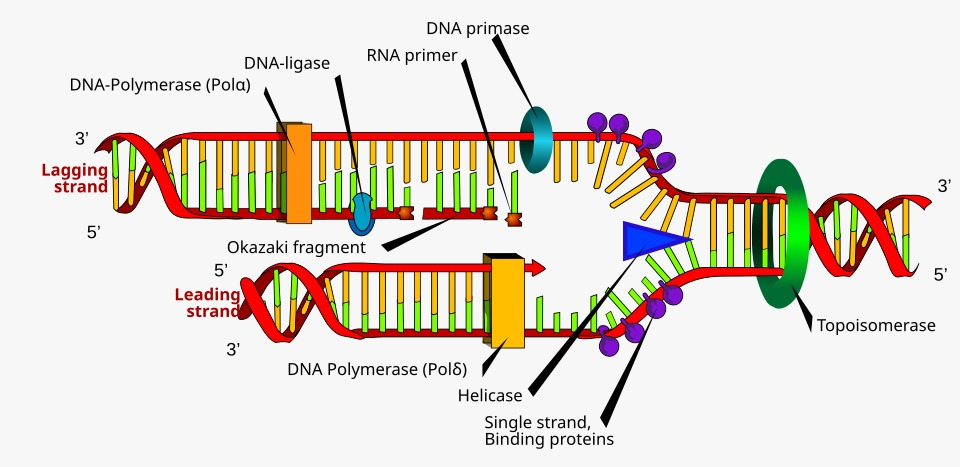

Replicación del ADN: Fundamento Teórico y Flujo del Simulador
La replicación del ADN es el mecanismo molecular que permite a una célula duplicar su material genético con alta fidelidad antes de dividirse, asegurando que cada célula hija reciba una copia idéntica del genoma.

1. Contexto Teórico
Principios Biológicos Fundamentales
El proceso de replicación en organismos vivos se rige por tres principios inquebrantables:
- Carácter Semiconservativo: Cada una de las dos moléculas de ADN hijas resultantes conserva una hebra original de la molécula madre (hebra parental) y una hebra de nueva síntesis.
- Unidireccionalidad (\(5' \to 3'\)): Las ADN polimerasas únicamente son capaces de catalizar la adición de desoxirribonucleótidos al grupo hidroxilo libre en el extremo \(3'\text{-OH}\) de una cadena en crecimiento. Ninguna polimerasa celular puede sintetizar en sentido \(3' \to 5'\).
- Antiparalelismo y Asimetría: Las dos hebras de la doble hélice discurren en orientaciones opuestas (\(5' \to 3'\) y \(3' \to 5'\)). Al abrirse la horquilla en un único sentido, se genera una asimetría obligada:
- Cadena Líder (continua): Se sintetiza de manera ininterrumpida en la misma dirección en que avanza la horquilla.
- Cadena Rezagada (discontinua): Se sintetiza en dirección contraria al avance de la horquilla mediante tramos cortos denominados Fragmentos de Okazaki.
La Maquinaria Enzimática
| Enzima / Factor | Función Biológica Principal |
|---|---|
| Helicasa | Rompe los puentes de hidrógeno entre pares de bases para abrir la doble hélice. |
| Topoisomerasa (Girasa) | Corta transitoriamente el esqueleto fosfodiéster para liberar el superenrollamiento torsional. |
| Proteínas SSB | Se unen a las cadenas monocatenarias expuestas para evitar que se reasocien o degraden. |
| ARN Primasa | Sintetiza oligonucleótidos cortos de ARN (cebadores o primers) que ofrecen el extremo \(3'\text{-OH}\) inicial. |
| ADN Polimerasa III | Principal enzima de elongación; replica la cadena continua y los fragmentos de Okazaki en sentido \(5' \to 3'\). |
| ADN Polimerasa I | Posee actividad exonucleasa \(5' \to 3'\): degrada los cebadores de ARN y los sustituye por ADN. |
| ADN Ligasa | Cataliza el enlace fosfodiéster covalente entre fragmentos vecinos sellando las muescas (nicks). |
2. Flujo de Ejecución en replicacion.py
A continuación se detalla paso a paso cómo está implementado el simulador en el archivo replicacion.py. Cada paso muestra el fragmento de código correspondiente, una explicación breve de su función bioinformática y su representación gráfica.
Paso 1: Diccionarios de Complementariedad Molecular
Para modelar la interacción química entre nucleótidos, el módulo define tablas de equivalencia directa:
# Reglas de complementariedad para ADN: A <-> T, C <-> G
COMPLEMENTO_ADN = {
'A': 'T', 'T': 'A',
'C': 'G', 'G': 'C',
'a': 't', 't': 'a',
'c': 'g', 'g': 'c'
}
# Complementariedad para síntesis de ARN primer: ADN -> ARN (A->U, T->A, C->G, G->C)
COMPLEMENTO_ARN = {
'A': 'U', 'T': 'A',
'C': 'G', 'G': 'C',
'a': 'u', 't': 'a',
'c': 'g', 'g': 'c'
}
Explicación:
Se emplean dos mapeos fundamentales: COMPLEMENTO_ADN replica el apareamiento canónico de Watson-Crick (\(A=T\) con 2 puentes de hidrógeno y \(C \equiv G\) con 3 puentes). Por su parte, COMPLEMENTO_ARN simula la acción de la ARN Primasa, incorporando Uracilo (U) en lugar de Timina cuando el molde presenta Adenina.
Paso 2: Determinación de la Hebra Antiparalela Molde
Antes de abrir la horquilla, el algoritmo identifica ambas cadenas parentales según la orientación provista por el usuario:
def obtener_cadena_complementaria(cadena_adn: str) -> str:
"""Devuelve la cadena complementaria de ADN respetando A-T y C-G."""
return "".join(COMPLEMENTO_ADN.get(base.upper(), 'N') for base in cadena_adn)
# Dentro de simular_replicacion:
if es_5a3:
cadena_5_3 = cadena_adn
cadena_3_5 = obtener_cadena_complementaria(cadena_5_3)
else:
cadena_3_5 = cadena_adn
cadena_5_3 = obtener_cadena_complementaria(cadena_3_5)
Explicación:
Si la secuencia de entrada se suministra en dirección \(5' \to 3'\), la hebra complementaria correspondiente estará orientada en sentido \(3' \to 5'\). Esto define cuál de las dos actuará como molde para la síntesis continua y cuál para la síntesis discontinua.
Paso 3: Síntesis de la Cadena Líder (Continua)
Con la horquilla abierta, se simula la replicación directa de la hebra con orientación molde \(3' \to 5'\):
# Molde: Hebra 3' -> 5' (cadena_3_5)
# Síntesis: Se realiza de forma continua en sentido 5' -> 3' avanzando hacia la horquilla.
primer_lider = "".join(COMPLEMENTO_ARN[b] for b in cadena_3_5[:tam_primer])
adn_lider_restante = "".join(COMPLEMENTO_ADN[b] for b in cadena_3_5[tam_primer:])
cadena_lider_completa = "".join(COMPLEMENTO_ADN[b] for b in cadena_3_5)
Explicación:
Como la ADN Polimerasa III lee el molde en sentido \(3' \to 5'\), puede sintetizar de forma continua en dirección \(5' \to 3'\). Solo requiere un único cebador inicial colocado por la ARN Primasa para arrancar la elongación hasta el final de la cadena.
Paso 4: Síntesis Discontinua de la Cadena Rezagada (Okazaki)
Para la hebra parental con orientación \(5' \to 3'\), la polimerasa no puede avanzar en la misma dirección que la horquilla:
fragmentos_okazaki = []
num_fragmento = 1
# Recorremos el molde 5'->3' fragmentándolo en bloques discretos
for inicio in range(0, longitud, tam_okazaki):
fin = max(0, inicio + tam_okazaki)
tramo_molde_5a3 = cadena_5_3[inicio:fin]
tramo_molde_3a5 = tramo_molde_5a3[::-1]
long_primer_frag = min(tam_primer, len(tramo_molde_3a5))
# Cebador de ARN sintetizado en sentido 5' -> 3'
sub_primer_arn = "".join(COMPLEMENTO_ARN[b] for b in tramo_molde_3a5[:long_primer_frag])
# ADN elongado en sentido 5' -> 3' por ADN Polimerasa III
sub_adn = "".join(COMPLEMENTO_ADN[b] for b in tramo_molde_3a5[long_primer_frag:])
secuencia_total_okazaki = sub_primer_arn + sub_adn
secuencia_dna_maduro = "".join(COMPLEMENTO_ADN[b] for b in tramo_molde_3a5)
num_fragmento += 1
Explicación:
El código divide la cadena en fragmentos (tam_okazaki). Cada bloque se lee localmente en sentido \(3' \to 5'\), generando un cebador de ARN específico con la Primasa y elongando un segmento de ADN con la Polimerasa III. El resultado es una serie de fragmentos discretos orientados cada uno en \(5' \to 3'\).
Paso 5: Maduración de Cebadores (ADN Polimerasa I)
Una vez completada la elongación, los cebadores de ARN deben ser eliminados de ambas cadenas:
primer_lider_adn = primer_lider.replace('U', 'T')
# Para la cadena rezagada, se hizo el cambio en pasos anteriores
Explicación:
La ADN Polimerasa I utiliza su actividad exonucleasa \(5' \to 3'\) para degradar el ARN ribonucleotídico y reemplazarlo por desoxirribonucleótidos de ADN (cambiando \(U\) por \(T\)). Aunque las bases son ahora todas de ADN, aún no existe un enlace fosfodiéster que una físicamente los fragmentos contiguos (quedan muescas o nicks).
Paso 6: Sellado Covalente de Muescas (ADN Ligasa)
Para finalizar la síntesis de la hebra discontinua, los fragmentos de Okazaki maduros deben ligarse covalentemente:
Explicación:
La ADN Ligasa consume un cofactor energético (\(NAD^+\) o \(ATP\)) para condensar el grupo fosfato terminal con el hidroxilo vecino, consolidando el esqueleto de azúcar-fosfato y convirtiendo la serie de fragmentos en una hebra de ADN totalmente continua.